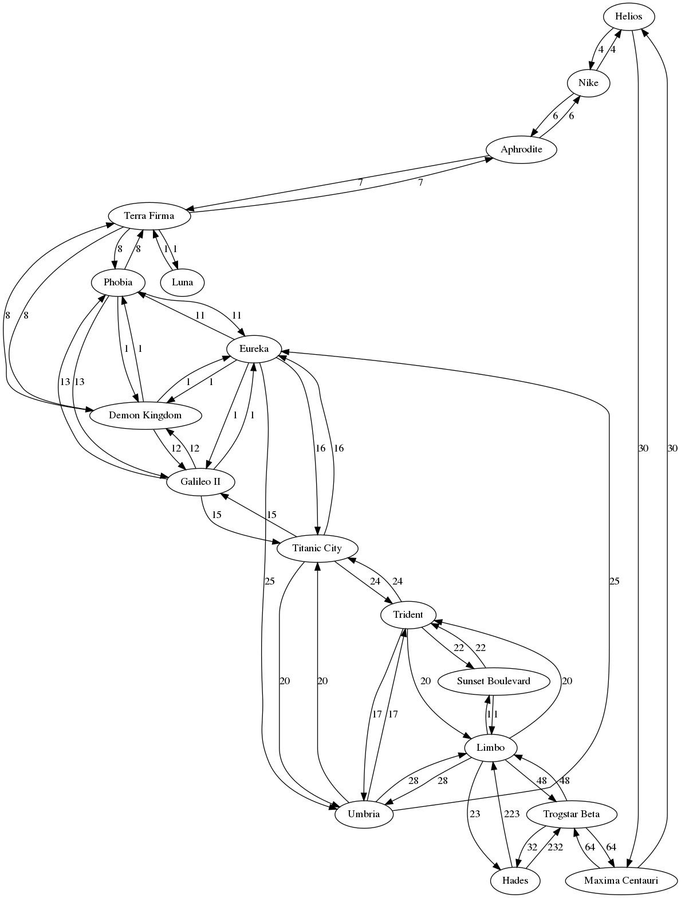

This challenge increases the number of nodes you need to encode - this is part of the challenge: efficient representation of the data.
It also adds the extra complication of having some of the links between nodes having different distance values in opposite directions (examine the links to and from Hades)
